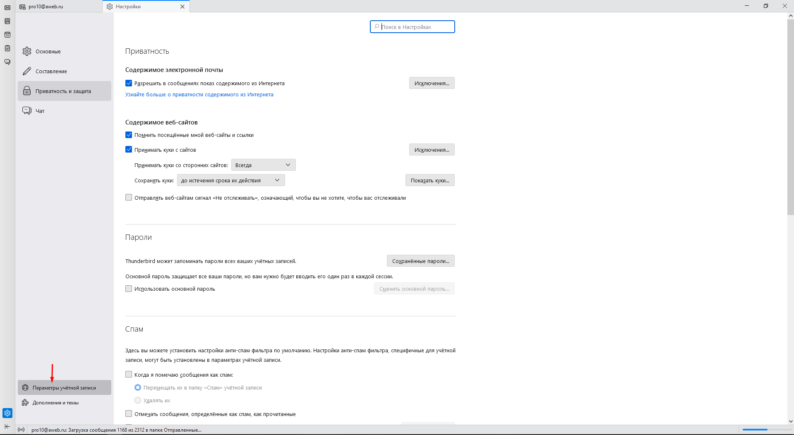

Настройка подписи для Thunderbird
1. Открывается настройки: Три горизонтальные полоски в правом верхнем углу - "Настройки".

2. Открываем "Параметры учётной записи"
3. Далее выбираем учётную запись, активируем "вставить подпись из файла", нажимаем Выбрать и берём файл .html куда закачали.

Всё готово!